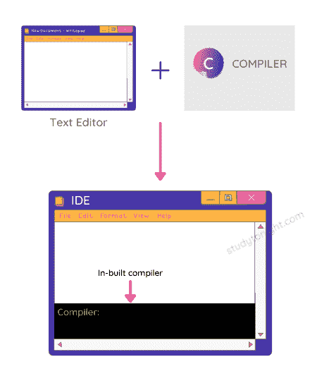
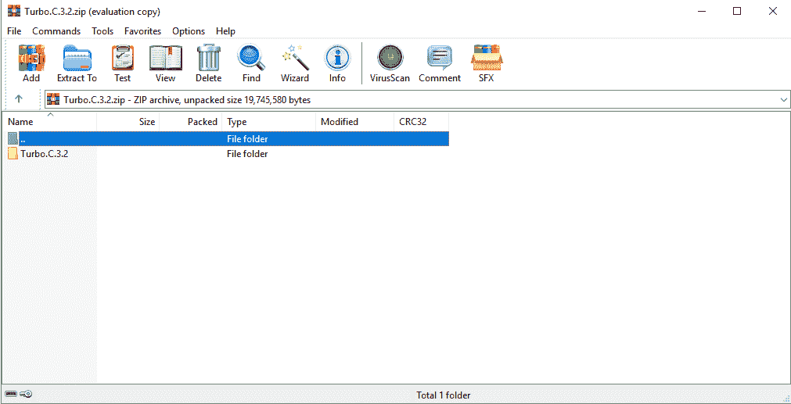
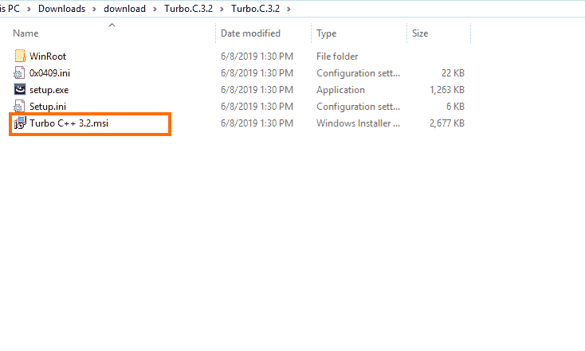
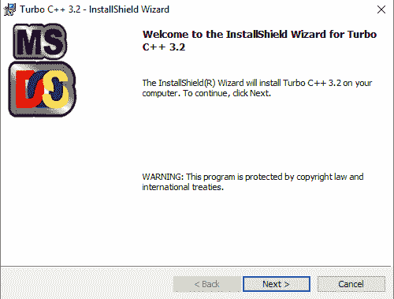
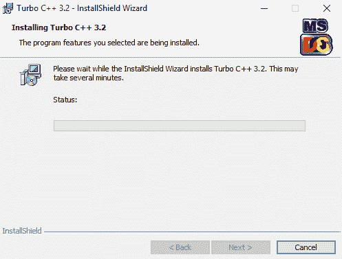
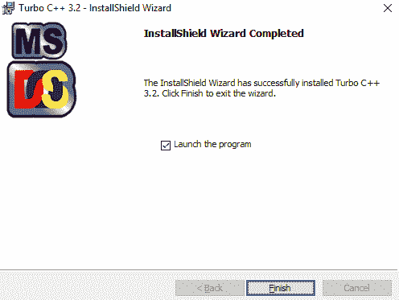
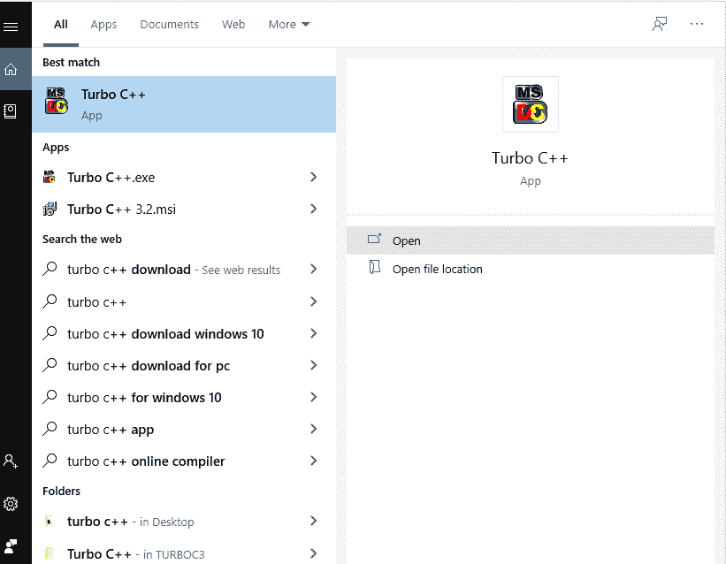
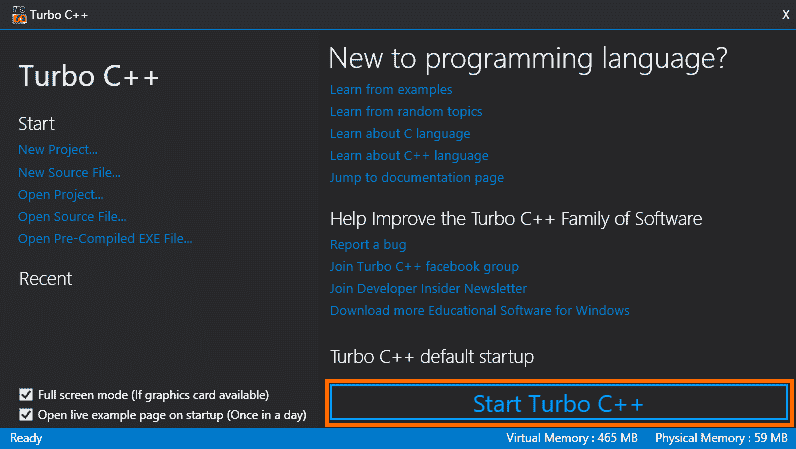
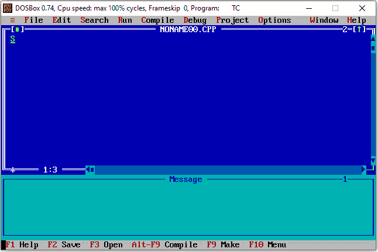
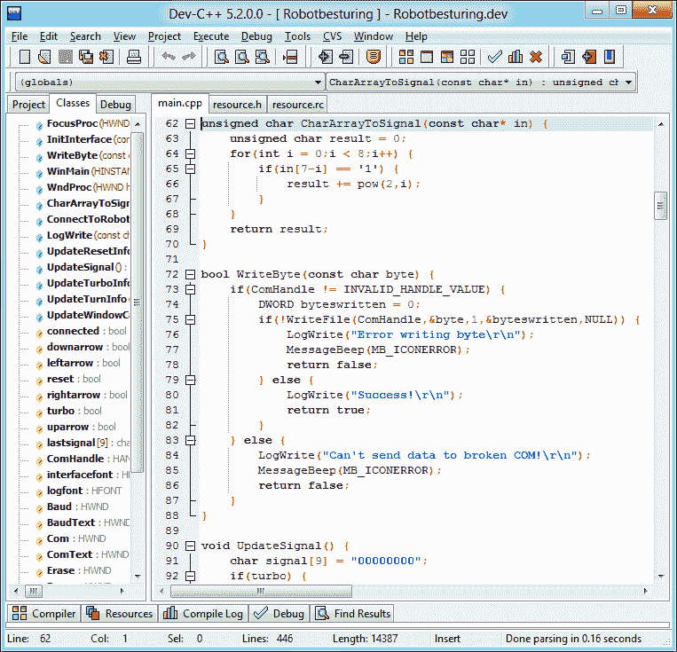

安装 C 编译器和集成开发环境（Turbo C++）
原文：https://www.studytonight.com/c/installing-c-compiler-ide.php
最受初学者欢迎的 C 语言 IDE 是 Turbo C/C++。在本教程中，我们将介绍 Turbo C 的安装步骤，还将分享一些您可以用于 C 编程的其他 IDE(集成开发环境)。
什么是 IDE？
IDE 或集成开发环境是一个软件，它有一个代码编辑器，还有编程语言的编译器，因此您不需要安装任何其他东西。
集成开发环境具有管理源代码所需的所有功能，如文件处理、编辑选项等。同时它也支持不同的编程语言环境，为此它安装了内置的编译器/解释器。

许多重集合成开发环境允许安装第三方插件来进一步增强集成开发环境的功能。
Turbo C 是一个用 C 语言编写代码的 IDE。您也可以使用 Turbo C 本身编译和运行您的代码。 Turbo C++ 是 Turbo C 的升级版，也可以用于 C 语言编程。
C++ 编译器支持 C 语言语法，因为 C++ 语言是建立在 C 语言之上的。
还有其他的 ide 可以用于 C 编程，比如:
- Dev-C++(从这里下载:下载 Dev-C++ )
- Eclipse ( 下载 Eclipse IDE )
如果您是初学者，我们建议您使用 Turbo C 或 Turbo C++。
为 Windows 7/8/10 安装 Turbo C/C++
让我们看看如何安装 Turbo C 来编写 C 程序。
第一步。从下载 IDE 安装程序开始
可以从这个链接下载 Zip 文件:下载 Turbo C
第二步。解压缩文件以查看安装程序文件
接下来，使用 WinRar 或任何其他软件来查看您下载的 zip 文件中有什么。

第三步。开始安装
如果你是 Windows 操作系统用户，点击。开始安装的 msi 文件。

你会看到 Turbo C/C++ 的 InstallShield 向导，点击下一步按钮。

安装应该开始了。现在坐下来，等待安装完成。

安装完成后，您将看到以下窗口，勾选启动程序复选框(如果尚未勾选)，然后点击完成启动 Turbo C/C++ IDE，开始编写 C 语言代码。

第四步。启动 Turbo C/C++ IDE
要启动 IDE，您可以通过在桌面上创建快捷方式来轻松启动 IDE。或者打开开始菜单，搜索 Turbo C ，你会在那里看到应用程序。

点击 Turbo C++ app 选项，会看到如下窗口。然后点击启动 Turbo C++ 按钮，启动 IDE 应用程序。

这就是它的样子。 Bluuueee！

C 程序设计的其他集成开发环境
可以使用 Dev-C++ IDE 或者 Eclipse IDE 进行 C 编程。在集成开发环境的介绍中，我们已经分享了两者的下载链接。
如果您想要一个更现代的 C/C++ IDE 来编写 C 程序，那么您应该尝试 Dev-C++ 因为它不像 Eclipse IDE 那么复杂，同时具有基本的 Turbo C/C++ IDE 所缺乏的许多特性。

结论:
在本教程中，我们学习了什么是 IDE 或 Integrated 开发环境，哪些 IDE 可以用于 C 编程，以及如何逐步安装最流行的 C 语言 IDE，即 Turbo C/C++。